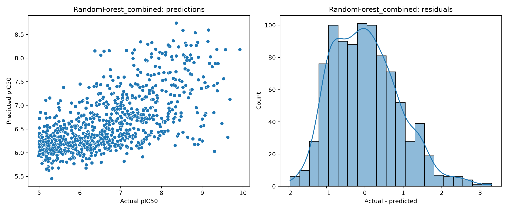
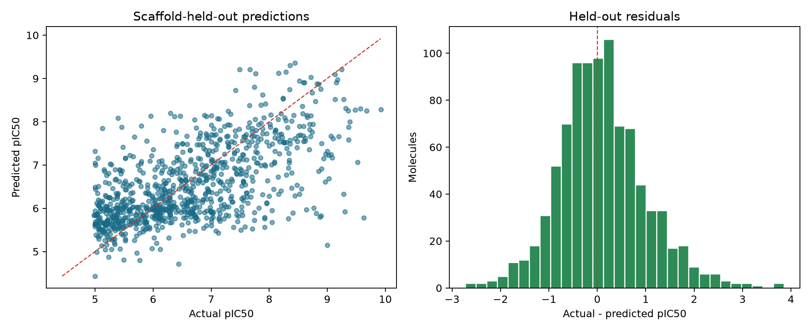
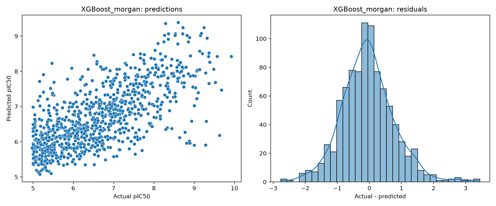
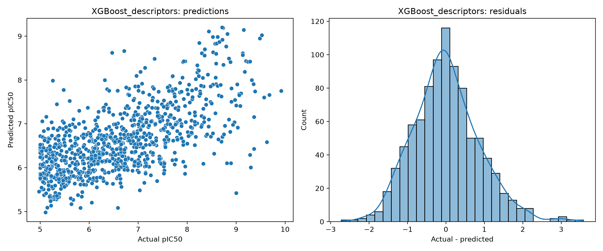
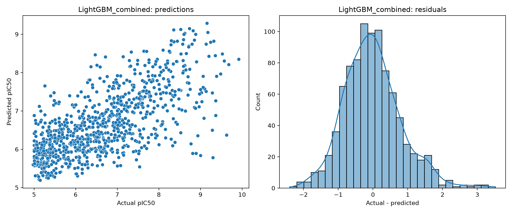
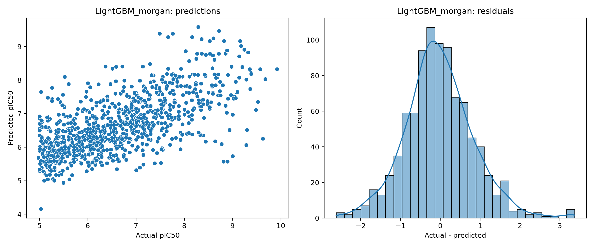
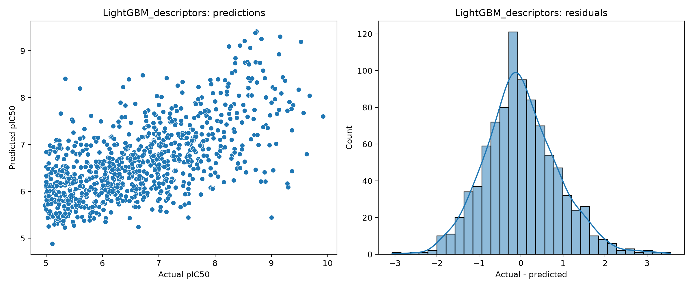
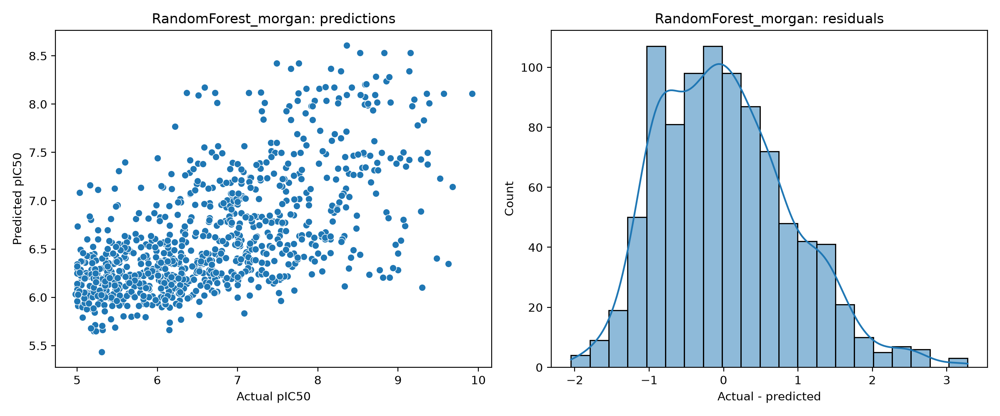
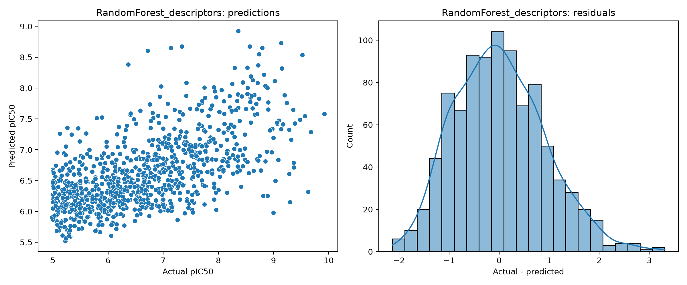

01 / RETRIEVAL
Raw ChEMBL
Target-selected IC50 records for CHEMBL220.
8,793 rows
AChE molecular machine learning built around a simple question: how much of acetylcholinesterase inhibitory potency can be recovered from molecular structure — and what changes when the representation, model, and chemical validation strategy change?

Acetylcholinesterase is a serine hydrolase responsible for the rapid hydrolysis of acetylcholine. Its catalytic activity regulates the lifetime of acetylcholine in cholinergic signalling, making AChE an established molecular target for modulation of cholinergic signalling.
Medicinal-chemistry collections contain molecules with experimentally measured activities. QSAR modelling asks whether information encoded by molecular structure can explain or predict variation in those measurements.
This project predicts a curated AChE potency label. It does not establish cellular efficacy, pharmacokinetics, toxicity, selectivity, blood–brain-barrier penetration, or clinical benefit.
The raw data are literature-derived ChEMBL activity records associated with human acetylcholinesterase, CHEMBL220. The dataset should therefore be understood as an aggregation of measurements across assays and sources, not as one homogeneous experiment.
Raw activity records in the retrieved snapshot.
Unique molecule ChEMBL identifiers before the full curation sequence.
Unique assay ChEMBL identifiers in the raw snapshot.
Changing units, molecular identity, duplicate handling, relation qualifiers, or potency cutoffs changes the target distribution the learner sees. The cohort is therefore treated as a scientific object that must be traceable.
Scroll horizontally through the actual curation sequence. The endpoint is not simply “the cleaned dataset”; it is a documented chain of transformations.
Target-selected IC50 records for CHEMBL220.
Initial validity and required-field filtering.
Canonicalized molecular structure after salt/fragment processing.
Structure identity generated for grouping and duplicate handling.
Potential duplicate records removed before unit processing.
Unsupported activity units excluded.
Supported values mapped to a common nM scale.
IC50 values transformed to the logarithmic potency scale.
Within-group robust outlier handling for replicate measurements.
Remaining exact duplicates removed.
Non-equality relation qualifiers excluded from the quantitative regression cohort.
Final cohort restricted to positive IC50 ≤ 10,000 nM.
pIC50 spans 4.9208–10.9606, with median 6.3010 and SD 1.1267.
Representation is not an implementation detail. It determines what structural information is even available to the learner.
Radius-2 circular fingerprints expose local atom environments and recurring substructure patterns.
Global structural proxies: molecular weight, logP, HBD/HBA, TPSA, charge, rings, rotatable bonds and related quantities.
Local substructure information and global physicochemical information are concatenated into one classical feature space.
Local circular environments can be highly useful for analogue-series learning. The trade-off is that the 1,024-bit hash is not a complete molecular description and can collide distinct environments.
Descriptors expose global quantities that are not directly represented by a binary substructure fingerprint. They are structural proxies, not direct measurements of binding affinity.
Bemis–Murcko scaffolds were used to keep scaffold groups together. The saved partition contains 3,656 training molecules and 915 held-out test molecules, with zero scaffold overlap.

Random Forest, XGBoost and LightGBM were each tested with Morgan, descriptors and combined features. Hyperparameters were selected with the saved Optuna workflow under scaffold-grouped validation.
| Model | Representation | Test MAE | RMSE | R² | Pearson | Spearman | CV MAE |
|---|---|---|---|---|---|---|---|
| Random Forest | Morgan | 0.7053 | 0.8840 | 0.3889 | 0.6325 | 0.6372 | 0.6854 |
| Random Forest | Descriptors | 0.7186 | 0.8983 | 0.3690 | 0.6155 | 0.5949 | 0.7202 |
| Random Forest | Combined | 0.6985 | 0.8718 | 0.4058 | 0.6476 | 0.6446 | 0.6812 |
| XGBoost | Morgan | 0.6231 | 0.8240 | 0.4691 | 0.6905 | 0.6765 | 0.6042 |
| XGBoost | Descriptors | 0.6613 | 0.8568 | 0.4259 | 0.6533 | 0.6291 | 0.6993 |
| XGBoost | Combined | 0.6045 | 0.7981 | 0.5020 | 0.7109 | 0.6935 | 0.5974 |
| LightGBM | Morgan | 0.6530 | 0.8560 | 0.4271 | 0.6625 | 0.6558 | 0.6347 |
| LightGBM | Descriptors | 0.6780 | 0.8775 | 0.3979 | 0.6340 | 0.6082 | 0.7141 |
| LightGBM | Combined | 0.6312 | 0.8223 | 0.4712 | 0.6885 | 0.6746 | 0.6313 |
MAE in pIC50 on the original held-out test partition.
Second strongest combined-feature classical result.
Third combined-feature classical result.



The GNN stage represents the molecule explicitly as a graph. Seven categorical atom features and thirteen edge channels are processed through three message-passing steps, then combined with the same 14 global descriptors used by the classical descriptor experiments.
Atomic number, degree, formal charge, hybridization, aromaticity, hydrogen count and ring membership.
13 channels covering bond type, conjugation, aromaticity, ring membership and stereochemical indicators, with directed message edges.
AdamW · 0.001 learning rate · 0.0001 weight decay · Smooth L1 · clipping 5 · early stopping patience 20 · seed 50.

The saved GNN reached RMSE 0.9093, R² 0.3535 and Pearson r 0.6225 on the scaffold-held-out test partition. Best validation MAE was 0.6507 at epoch 48; training stopped at epoch 68.
The repository stores per-model predictions, residuals and diagnostic plots. The figures below make the behaviour of each classical model visible rather than reducing the study to a leaderboard.








For the best original XGBoost model, Pearson correlation is 0.7109 and Spearman correlation is 0.6935, while MAE is 0.6045 and RMSE is 0.7981. The metrics answer different questions; R² is not a percentage accuracy.
A dedicated clean audit reserves 548 validation molecules from the original training portion while retaining the same 915-molecule test partition. This makes the classical/GNN comparison more directly comparable.
| Model | Features | CV MAE | Test MAE | RMSE | R² | Pearson |
|---|---|---|---|---|---|---|
| XGBoost · Combined | 1038 | 0.6479 | 0.6352 | 0.8347 | 0.4553 | 0.6795 |
| XGBoost · Morgan | 1024 | 0.6569 | 0.6510 | 0.8519 | 0.4326 | 0.6648 |
| RF · Combined | 1038 | 0.6875 | 0.6764 | 0.8507 | 0.4341 | 0.6644 |
| RF · Morgan | 1024 | 0.6948 | 0.6852 | 0.8631 | 0.4175 | 0.6506 |
| GNN · Graph + descriptors | 34 | — | 0.6908 | 0.9093 | 0.3535 | 0.6225 |
| XGBoost · Descriptors | 14 | 0.7276 | 0.6969 | 0.8892 | 0.3818 | 0.6188 |
| RF · Descriptors | 14 | 0.7366 | 0.7169 | 0.8978 | 0.3698 | 0.6140 |
The project includes a forensic implementation audit. These findings are part of the research record, not something to hide behind a polished interface.
Original metric logs reported dimensions that did not match the selected estimator matrices. The actual model inputs are 1024 Morgan, 14 descriptors and 1038 combined; predictions are unaffected.
The size-ordered scaffold allocation creates a singleton-heavy test set. It is leakage-safe but not a balanced scaffold sample.
Ninety disconnected structures remain after salt removal in the saved audit. They were not automatically deleted and require chemical inspection.
The current implementation uses normalized IC50_nM. The audit found zero differently classified rows versus the raw-value expression for this snapshot.
The current GNN implementation has 13 edge-feature channels. Older descriptions that say three are inconsistent with the current code.
The principal results use a fixed scaffold-held-out partition. Repeated scaffold assignments are needed to quantify performance variability.
The saved results support a dataset-specific advantage for combining Morgan local structural information with global RDKit descriptors.
XGBoost is the strongest of the three saved combined-feature classical models on the original held-out partition.
The implemented GNN did not outperform the matched classical baselines. That result is informative without implying universal GNN inferiority.
The best original model has R² = 0.5020. That is a coefficient of determination, not classification accuracy. The model’s MAE is 0.6045 pIC50, and RMSE is 0.7981. The distinction matters when communicating scientific performance.
The research record contains source modules, data snapshots, metrics, predictions, Optuna trials, audit tables, model checkpoints and diagnostic figures.
Python 3.12.3
RDKit 2026.03.4
Pandas 2.3.3
NumPy 2.4.3
scikit-learn 1.9.0
SciPy 1.17.1
CHEMBL220
IC50 → pIC50
Morgan r2 / 1024
14 descriptors
seed 50
3,108 train
548 validation
915 test
0 scaffold overlap
The released research snapshot is archived on Zenodo and can be cited independently of the GitHub interface.
Data ingestion, curation, engineering, models, GNN and audit code.
All saved model diagnostic and comparison figures used here.
Metrics, predictions, audit artifacts and model outputs.
Detailed implementation and methodology audit.
The complete manuscript-level research record.
Software citation information for the repository.
Versioned research states and release provenance.
Scope, provenance and documented research snapshot.
These are directions, not claims of completed work.
Inspect disconnected structures, correct metadata, normalize threshold expression and reproduce the principal metrics.
Rank residuals, examine nearest-neighbour similarity and test whether activity cliffs concentrate among high-error molecules.
Use repeated or balanced scaffold assignments to quantify how sensitive performance is to test-set composition.
Explore edge encoding, message-passing depth, pooling, descriptor integration, regularization and repeated seeds.
Test on an independent or temporally separated dataset to strengthen claims beyond the current fixed partition.
3D/geometric modelling, protein–ligand interactions, docking-derived information, uncertainty and constrained generative design.
The landing page is the visual layer. The scientific report contains the detailed methodology, equations, tables, audit findings, limitations, reproducibility record and future-work analysis.